Plasticity STDP
Part A:
In the initial step I create one train of poisson spikes. shown here:
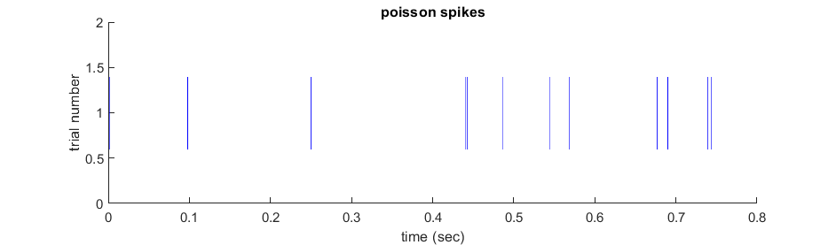
and calculate its ISI histogram, fano-factor, Cv:
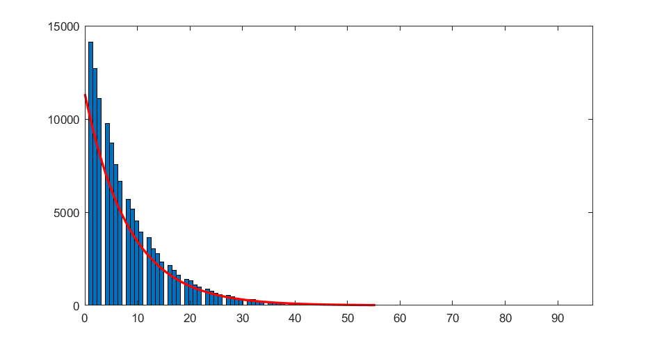
| key | value |
|---|---|
| Fano-Factor | 0.91033 |
| Cv | 0.93536 |
I wrote stdp_curve function to calculate synaptic changes.
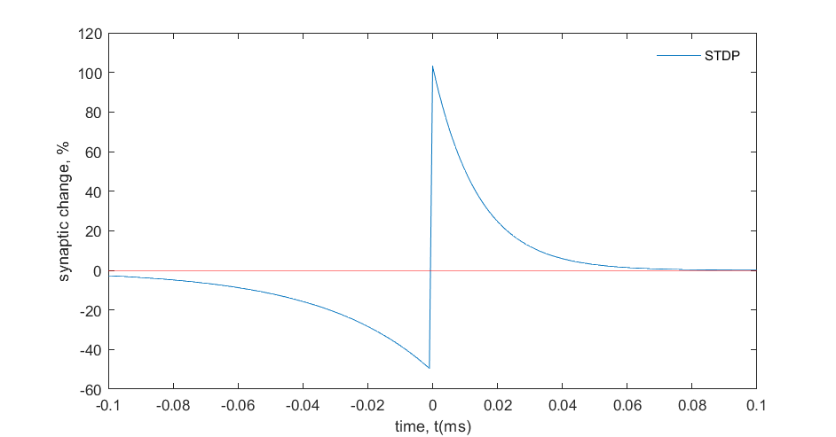
then I illustrate all-to-all scenario for desired results after averaging 30 trails of solution.
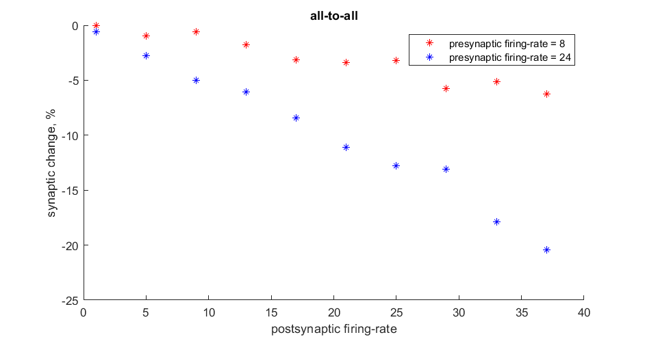
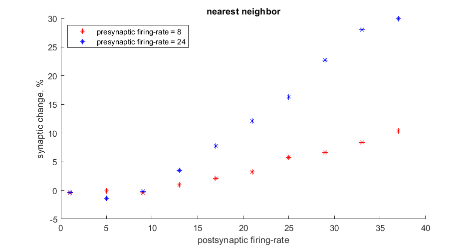
now I changed tau_n and observed that it change in low values of postsynaptic firing-rate.
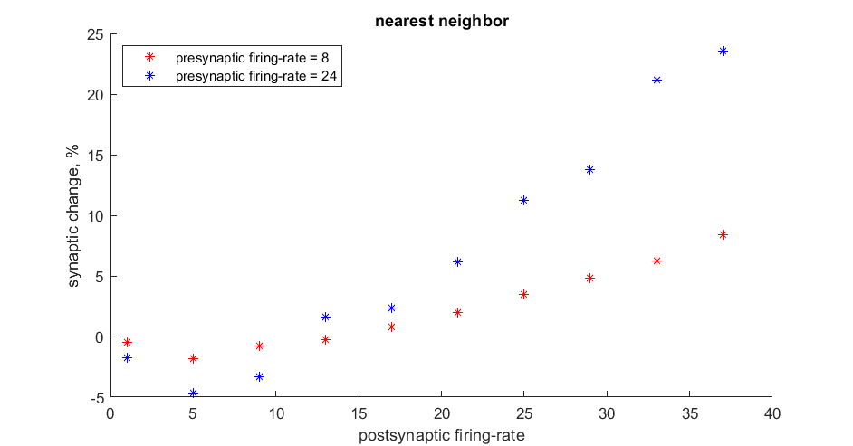
Part B:
I chose following parameters:
| Number of excitatory | Number of inhibitory | Vth | Vr | Ve | Vi | Vsp | C |
|---|---|---|---|---|---|---|---|
| 19 | 11 | -50 mv | -70 mv | 0 mv | 80 mv | -30 mv | 30e-3 |
- Without updating Wi in time
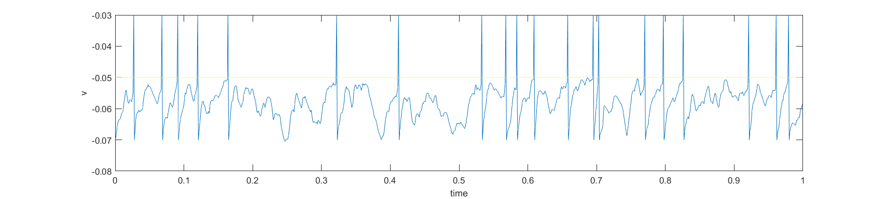
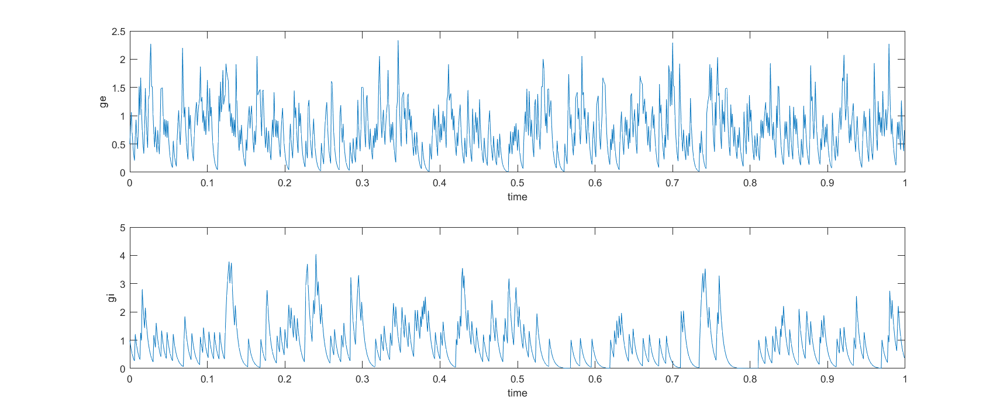
- Just updating Wi for the first presynaptic neuron
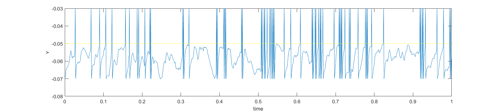
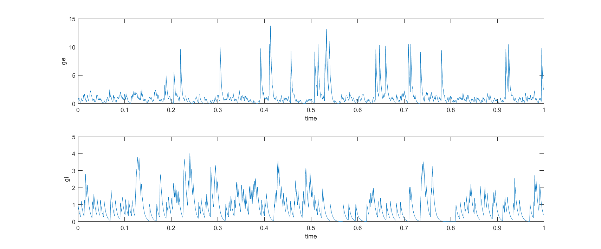
- Updating Wi for all presynaptic neurons
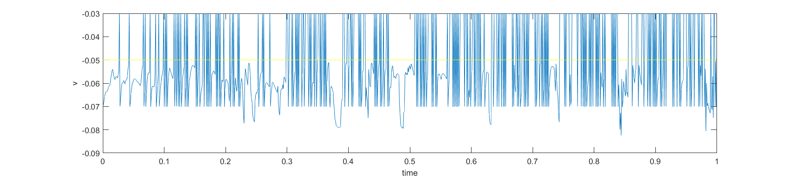
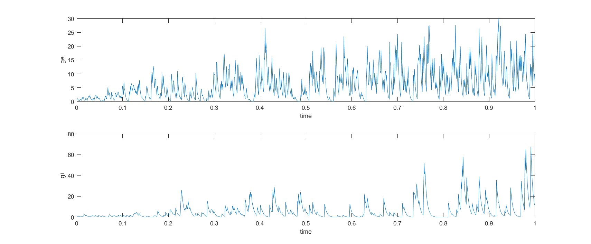
- In the case which updating Wi for the first presynaptic neuron, we have following graph
I changed inhibitory presynaptic neurons' firing-rate to change postsynaptic firing-rate randomly by multiplying their firing-rates into a parameter named
alphachanged from 0.8 to 4.
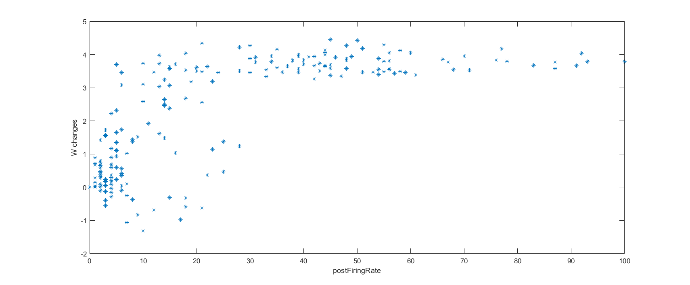
According to above figure, we can see some kind of saturation when postsynaptic firing-rate is increased. we can also see in low firing-rate a sagittal curve.
Part C:
At the first step, I created 1000 paired firing-rate as pre and post synaptic one. in this case I used mvnrnd matlab command to generate following paired data.
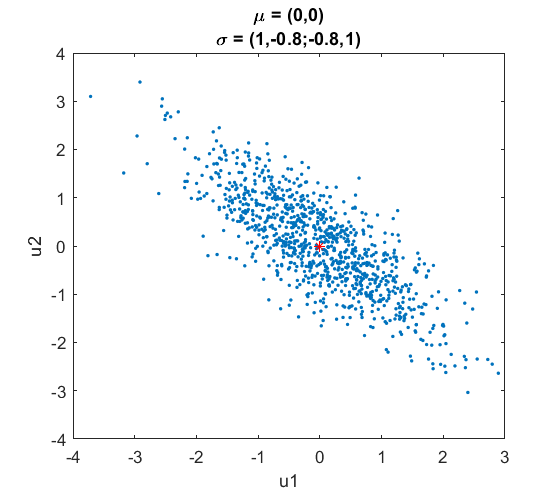
Hebb Rule
I set its average on (0,0), then used Hebb Rule. because of instability of this rule we cannot use following formulas.
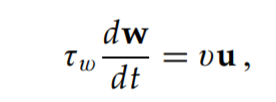
So according to the paper, I replaced that with auto-correlation form.
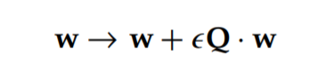
Where Q is :
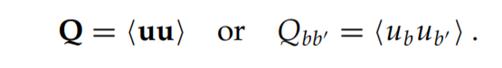
we can observe that w stretches along maximum covariance direction. we notice that if mu is equal to zero, covariance and auto-correlation matrix has the same meaning.
I also illustrated the first principal component that show the maximum covariance direction. so both of them referred to the same thing.
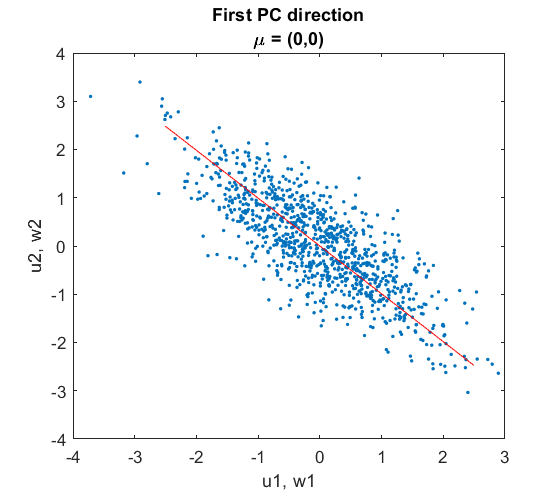
In the next step, I turned its average into (2,2). we can observe that it's been changed.
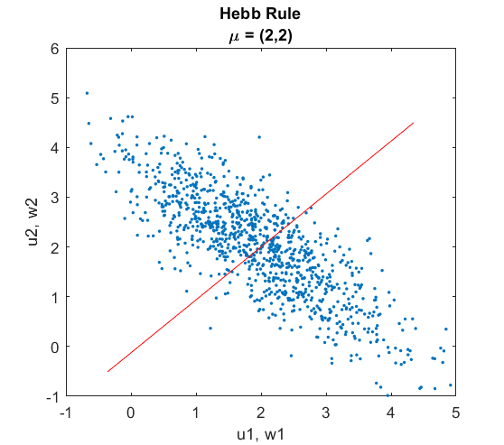
Covariance Rule
Similar to previous step we must change formulas to get more stability. so I assigned Q = cov(u) in matlab. that's because we chose average of u as θ (the threshold parameter).
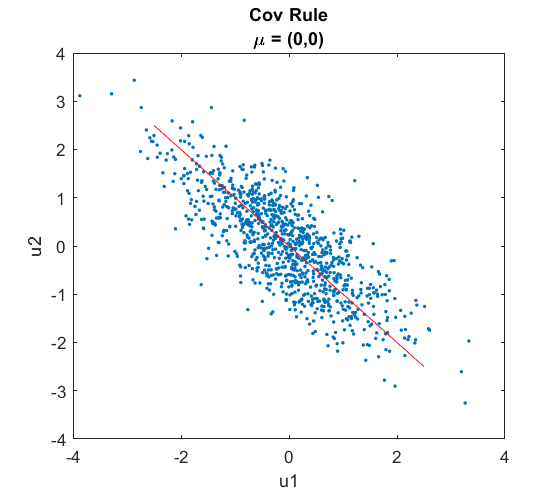
we can observe it not sensitive of changing its average.
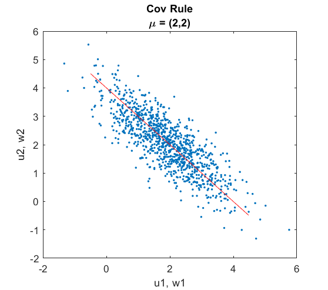
BCM Rule
There is extra formulas to implement in this section:
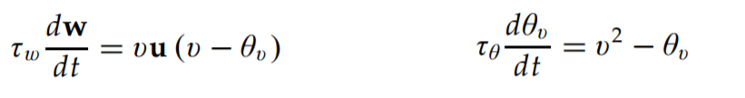
And the results is like bellow:
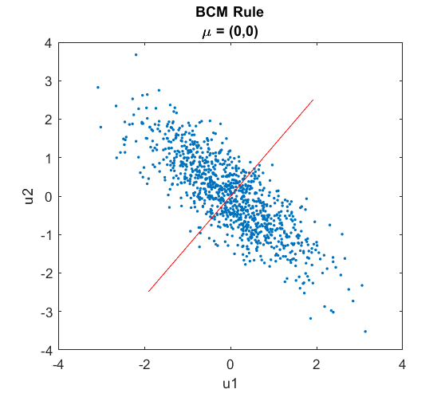
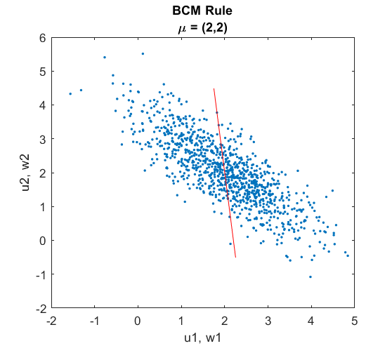